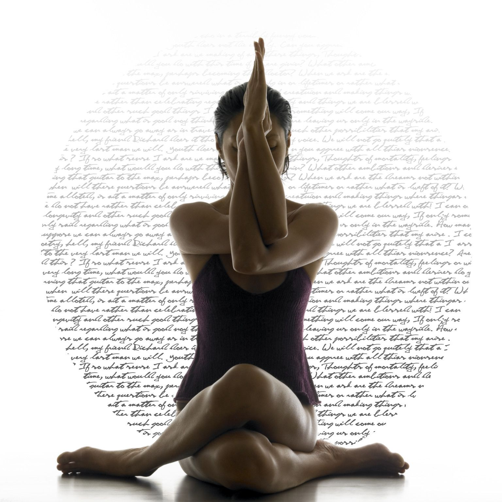
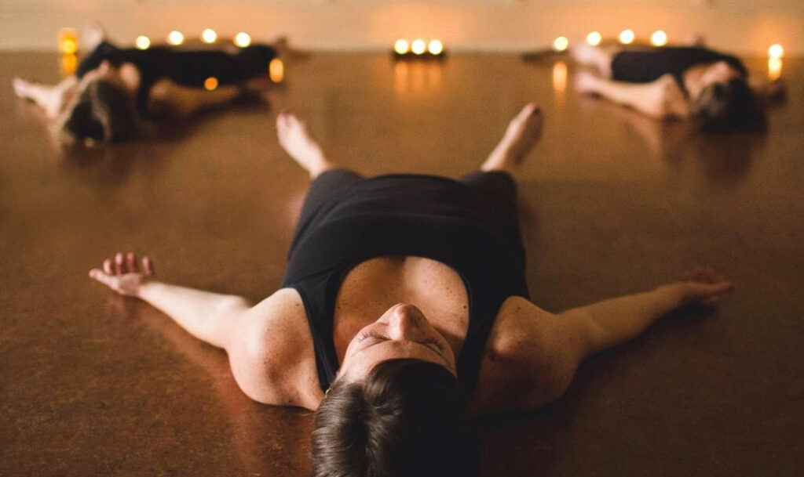
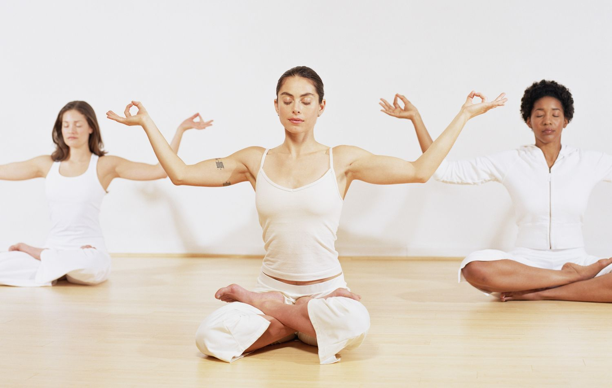
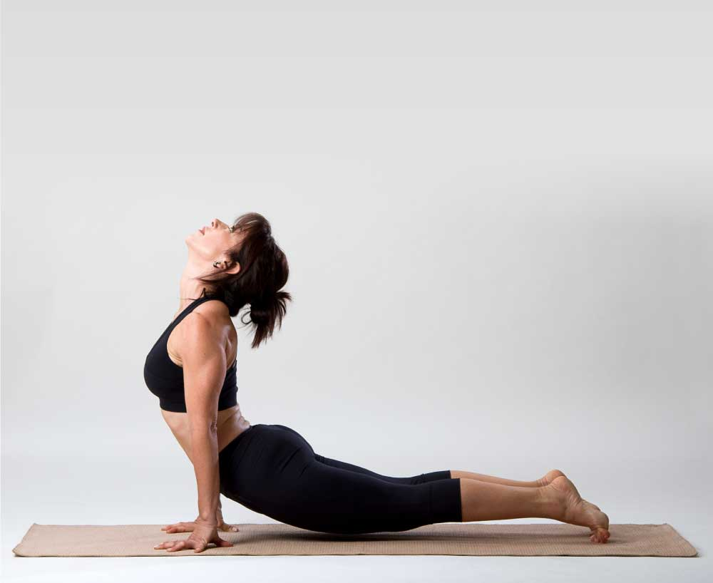
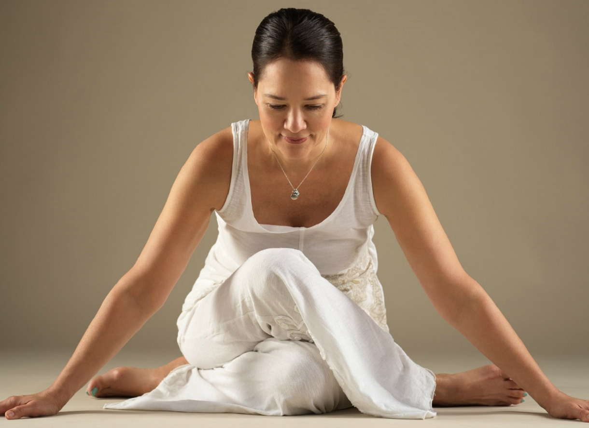
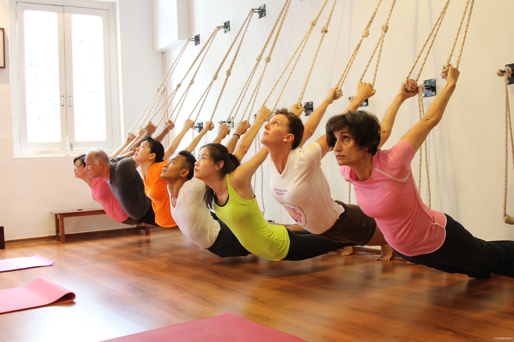
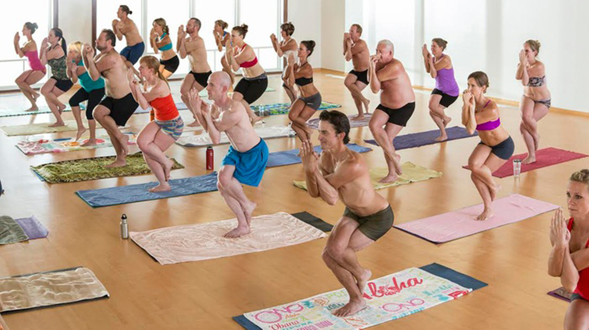

Основные виды йоги |
| Название |
Описание |
Фото |
| Хатха-йога |
это традиционная йога со всеми элементами: асаны, пранаямы - т.е.дыхательные техники, медитации;
практики Хатха-йоги основаны на нескольких элементах:
- комфортных устойчивых позах (асаны) с замками (бандхи) и специальными жестами (мудры)
- дыхательных практиках (пранаямы)
- упражнениях для расслабления и концентрации внимания (например, Шавасана или Баласана)
- очистительных практиках (шаткармы)
- медитациях и мантрах
|
 |
| Йога-нидра |
медитативная практика, где нет других асан, кроме шавасаны; иначе можно ее назвать «практикой сна», она учит осознанному расслаблению и управлению своими чувствами и ощущениями |
 |
Кундалини-йога |
акцент на пранаямы, пение мантр и работу с энергиями, направлена на дыхательные многоповторные упражнения с целью поднятия уровня энергии |
 |
| Аштанга |
структурная и силовая практика "по схеме"; в ней хорошо будут чувствовать себя перфекционисты и те, кому нравится и интересно изо дня в день повторять одну и ту же рутину, оттачивая асаны до совершенства и наблюдать за изменениями тела; в Аштанга йоге есть серии - последовательности асан с чёткими инструкциями |
 |
| Виньяса |
йога на основе Аштанга направления с плавными переходами из асаны в асану; комплекс поз вместе с дыханием; практика активная и энергичная, напоминает танец на коврике; дыхание здесь стоит на первом месте и служит неким «мостиком» при переходе от одной асаны к другой |
 |
Инь йога |
медитативная практика с длительным удержанием каждой асаны (в среднем по 2-5, иногда до 10 минут); эта практика подойдёт тем, кто хочет замедлиться, успокоить ум и вместе с тем приятно растянуть тело |
 |
| Айенгара |
йога отстроек и выравниваний тела; чаще всего в неё приходят с запросом на исправление осанки, а на занятиях используются множество вспомогательных предметов для поддержки тела: ремни, подушки, блоки, одеяла и т.д. |
 |
| Йога в гамаках |
суть заключается в адаптации базовых асан Хатха-йоги под выполнение их со специальным гамаком; это позволяет усилить эффект некоторых положений, сделать их более разнообразными, «повисеть вверх ногами», а при необходимости упростить положения |
 |
| Бикрам йога |
практика в разогретом до 40 градусов помещении. Состоит из 26 асан; вынуждает потеть и имеет множество противопоказаний |
 |